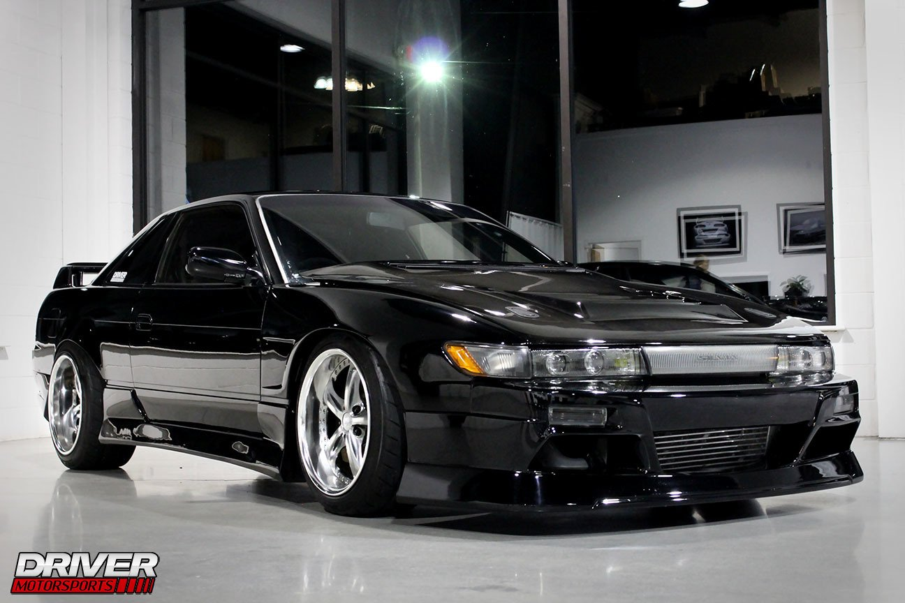
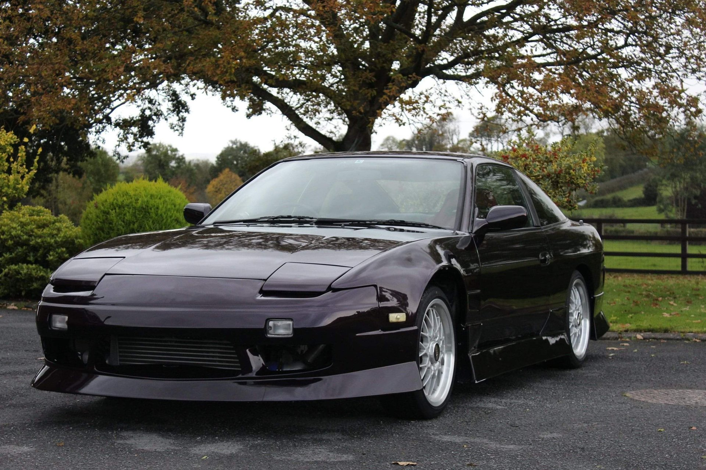
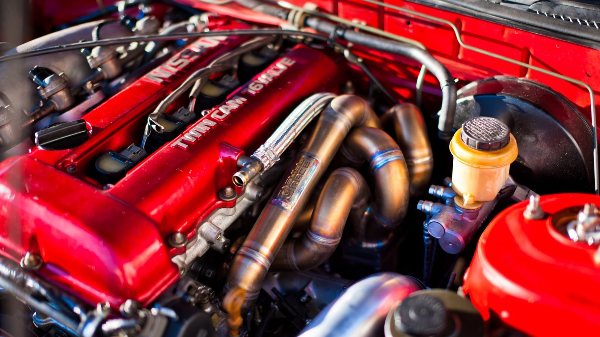
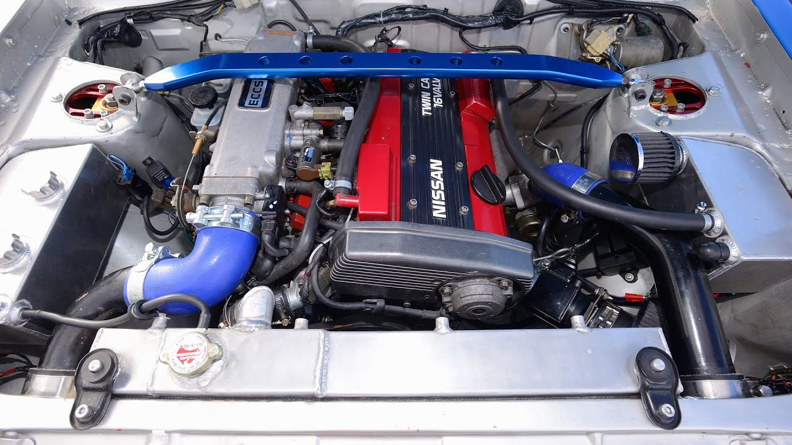
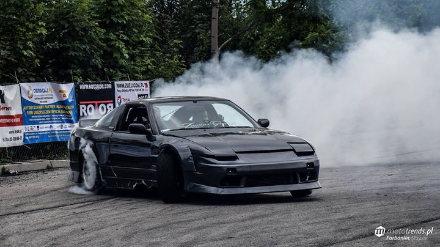
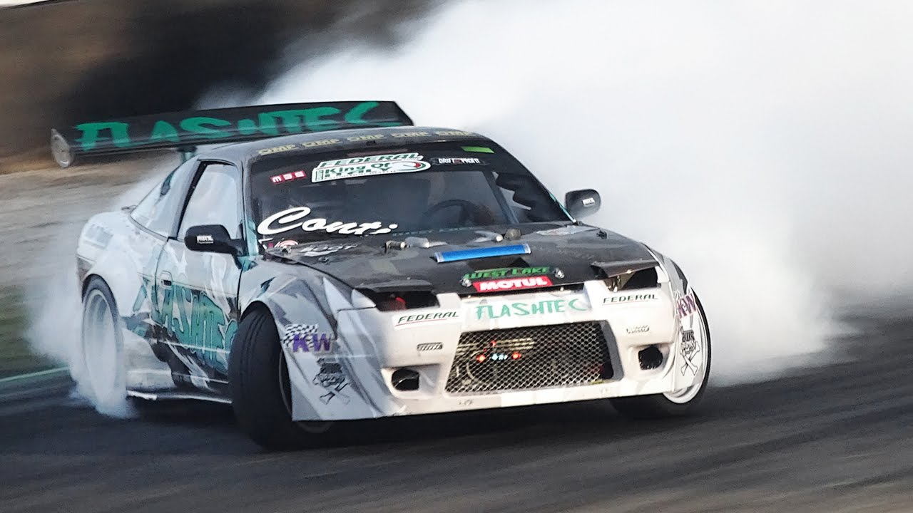

-
Historia:
Nissan S13, znany również jako 180SX, 200SX (w zależności od regionu) lub 240SX (w Stanach Zjednoczonych), został wprowadzony na rynek w 1988 roku. Był to samochód sportowy z tylnym napędem, który początkowo miał na celu zapełnienie luki między droższym modelem Nissan Silvia a tańszymi modelami.
-
Styl i Design:
S13 posiada charakterystyczny design z lat 80. i 90., z wyraźnymi krawędziami i agresywnymi liniami, które nadają mu sportowy wygląd. Charakterystyczna jest również podwójna szyba tylnej klapy, która zapewnia lepszą widoczność.W późniejszych wersjach S13, takich jak SilEight zastosowano również oryginalne modyfikacje stylizacyjne, w tym zmieniony przód, który połączył przednią część S13 z tyłem Nissan Silvia S13.
  -
Silniki:
Nissan S13 był dostępny z różnymi silnikami, w zależności od rynku. Najczęściej spotykanymi jednostkami napędowymi były silniki SR20DET (o pojemności 2.0 litra) oraz CA18DET (o pojemności 1.8 litra), oba turbodoładowane. Silniki te oferowały odpowiednią moc do driftowania i były bardzo popularne wśród modyfikatorów.
  -
Platforma:
S13 wykorzystywał platformę FR (Front-engine, Rear-wheel drive), co oznaczało, że silnik znajdował się z przodu, a napęd był na tylne koła. Ta konfiguracja zapewniała doskonałe właściwości prowadzenia, zwłaszcza podczas driftu.Platforma S13 była znana ze swojej solidnej konstrukcji, co czyniło ją popularnym wyborem wśród zawodników driftowych.
-
Popularność w społeczności driftowej:
Nissan S13 szybko zdobył popularność w społeczności driftowej zarówno w Japonii, jak i na całym świecie. Jego łatwa dostępność, niska cena i doskonałe właściwości prowadzenia sprawiły, że był to jedno z najczęściej używanych aut w zawodach driftowych.S13 był również chętnie modyfikowany przez entuzjastów, co sprawiło, że istnieje wiele zróżnicowanych wersji i stylizacji tego modelu.
  -
Dziedzictwo:
Nissan S13 ma trwałe dziedzictwo w świecie motoryzacji, szczególnie w kulturze driftu. Jego wpływ na rozwój sportu oraz na branżę modyfikacji samochodów jest nadal widoczny nawet dzisiaj, pomimo upływu lat od jego debiutu.
Nissan silvia s13 200sx

Nissan Silvia S13 - Ten samochód jest jednym z najbardziej kultowych pojazdów driftowych wszech czasów. Silvia S13 jest popularnym modelem do modyfikacji i tuningu, dzięki swojej lekkości, wyważonej konstrukcji i możliwości modyfikacji silnika. Jest to prawdziwy klasyk, który nadal cieszy się ogromnym uznaniem w społeczności driftowej.